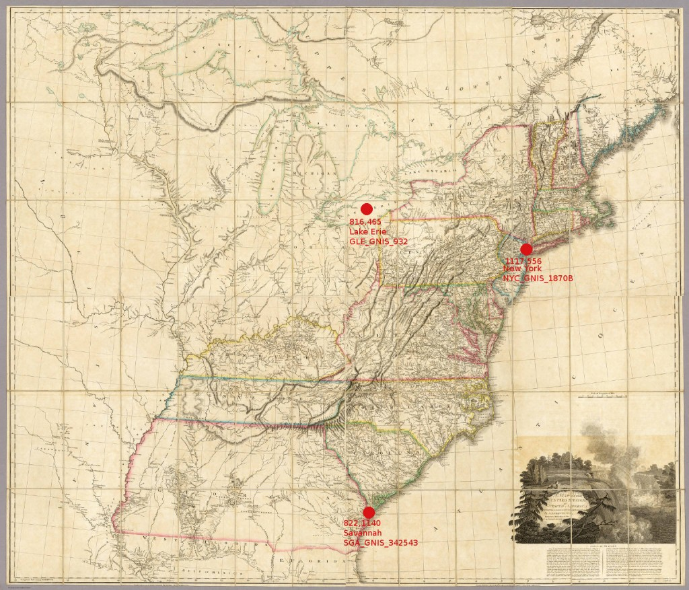

To aid in rectification of maps but also to work with spatial concepts present within the historic map itself, it would prove valuable to develop a standard for identifying features within a map object’s space. Given the nature of digitization, the pixel coordinates provide an agnostic measure of the location of a particular point or extent that could prove useful in a number of different manners:
Improved Search – By identifying features and locating them, we can not only improve text searches–which can include the capability to search for maps containing particular locations–but also extend search to include searches for particular patterns within a map, which would finally fulfill the dream of a truly spatially oriented search.
Rectification – With a clear standard, outputting the location layer in a tab-delimited and compatible format with, for example, ArcGIS, would give immediate known locations and, in the case of certain maps, allow for the possibility of automated rectification in some form (rough, likely, but on-the-fly).
Spatial Analysis within the Map Object’s Space – Rather than moving historical maps into a geo-rectified space, the identification of location, area and distance within a map object allows scholars to examine concepts of spatiality within the object itself, thereby allowing a more accurate understanding of the map as representation of a certain view of the world from the time and culture that created it. Typical spatial analytical techniques, such as network analysis and spatially weighted regression, could just as easily exist within the map object’s space, though would require identification of more objects on the map that would typically occur as part of a library-driven digitization process.
Mathematical Analysis of Geographic Representation – Similar to the above, but significant enough to warrant its own exploration is the possibility of developing a reverse projection for historical maps, based on their particular geographies, that could be considered a function of the creating culture’s vision of their world. As Turnbull points out, the use of a map, especially a historical map, is most often not to represent accurate geography as we understand it in a modern sense, but to convey other pieces of information. It’s rather imperialist to scoff at the poor geography of old maps, and does a disservice to our scholarship and to the people who have produced them. As we develop more comprehensive layers for historical maps, we should be able to identify patterns that will help us identify cultural and historical themes, as well as help to identify particularly rich cartographic subject matter to dictate future digitization.


A very rought mockup of this concept--note that this form of metadata can be created on even a very-low resolution scan.
CODE
This metadata would live as a simple array (or list) that would be parsed on output or by the display or search engine. The minimum data for each point is the unique_id_on_map, name_on_map and x_y_coord, with the preference for a modern or vernacular name as well as a URI. For polyline and polygon data, the x_y_coord field would simply hold a comma-delimited series of points, as per spatial data standards. For network data, simple RDF triples structure should be followed (unique_id, relationship, unique_id_of_target) and stored as an additional array after the array of features.